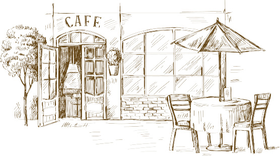

Más de 25 años de buenas historias...

Café Antigua con más de 25 años en La Antigua Guatemala, es un espacio auténtico distinguido por ser un lugar de encuentro para turistas y locales, en donde se puede regresar al pasado Colonial y disfrutar de su historia en una atmósfera acogedora y familiar, con aroma a café de la región.
Enfocado en brindar una experiencia en sabor, Café Antigua se distingue por ofrecer café de la región tostado en casa, variedad de panadería francesa, platillos tradicionales e internacionales y gelatos artesanales